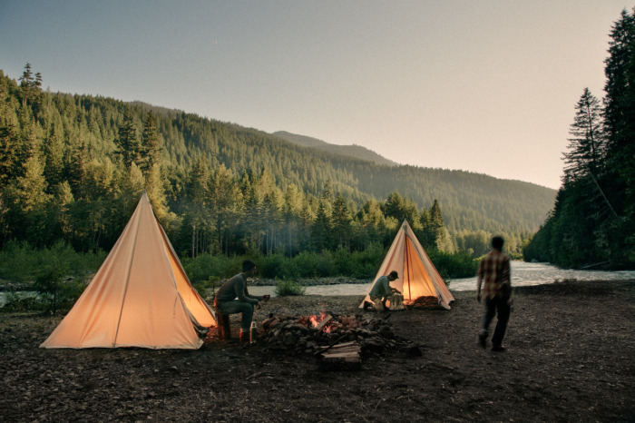
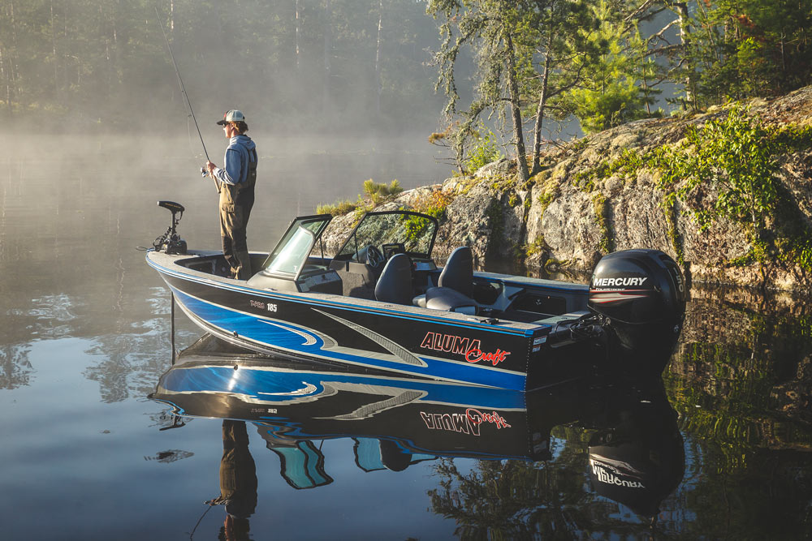

Папа
В этом году нам с папой представилось мало шансов покататься или куда-нибудь съездить.
От этого воспоминания становятся еще более ценными.
С Новым Годом, Папа!!
Ниже представленны карточки воспоминаний:

Походы
Однажды я нарисовала картину, посвященную походу к реке.
Мы пили очень много кофе, я рисовала, сидя на пне,
а папа рассказывал мне, какая рыба водится в этой реке.

Рыбалка
Никогда не забуду, как мы рыбачили с лодки, и я сломала папину удочку пополам.
Это было очень смешно и страшно одновременно.

Снегоход
Тут и лишних слов не надо.
Я перевернула папин снегоход.